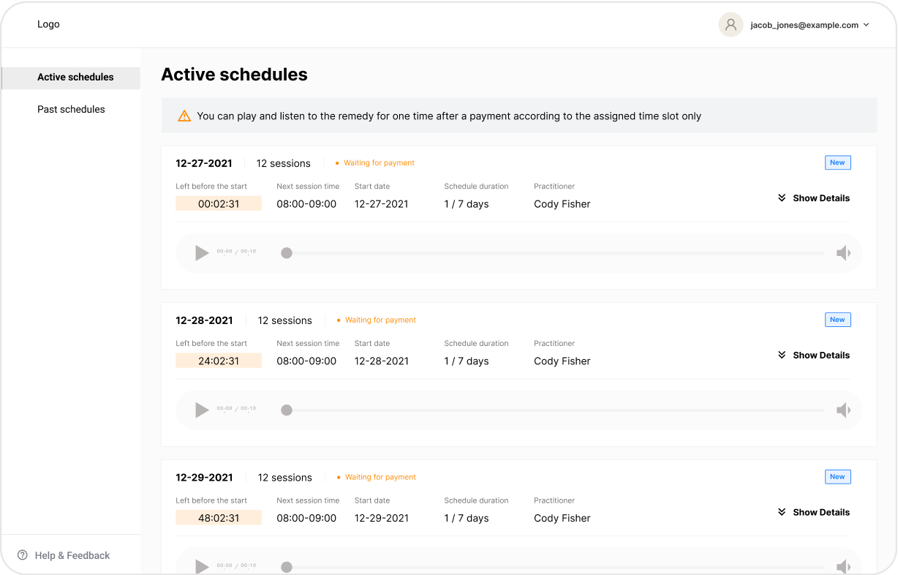
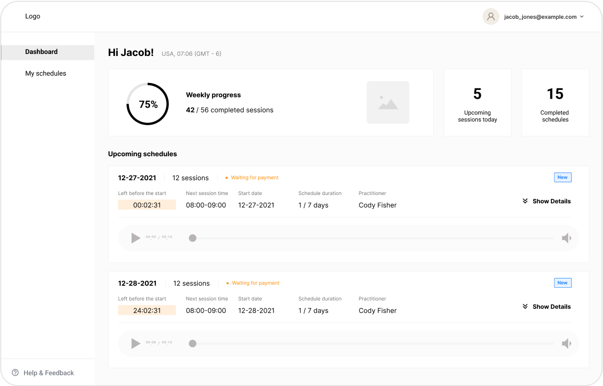
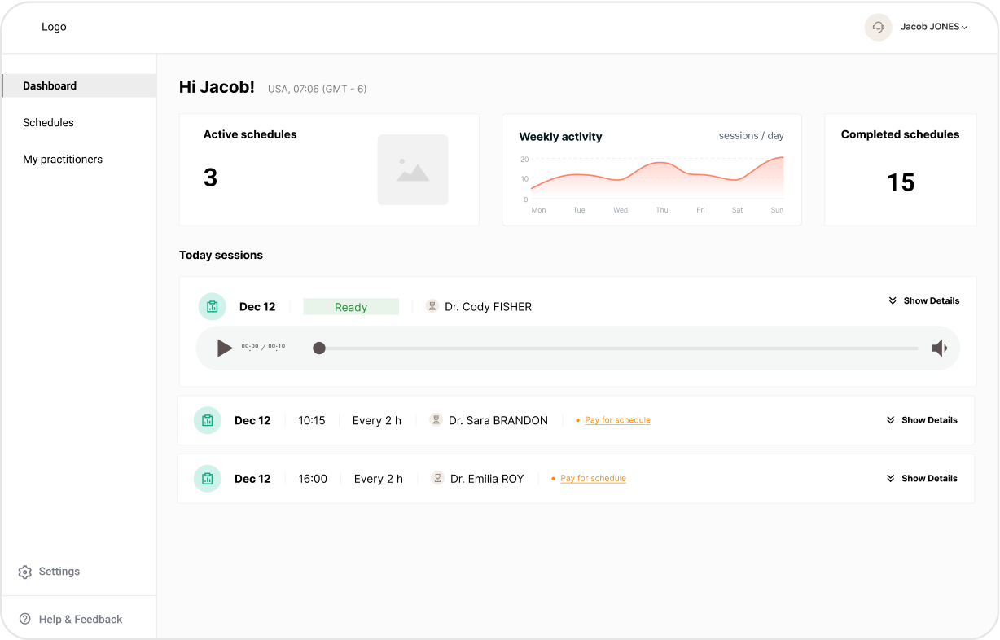
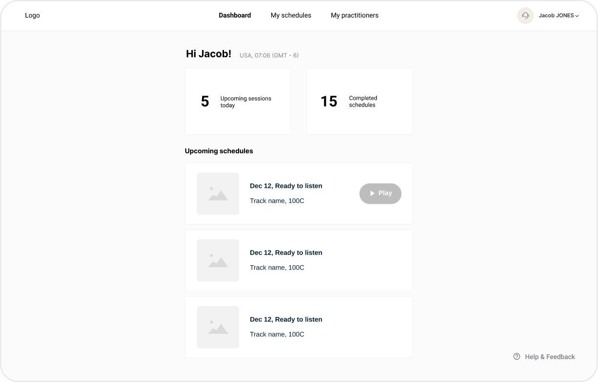

Overview
InnoVibe has developed a unique process for converting the carrier information of remedies (essences, salts, etc.) into homeopathic frequency tracks, which are transmitted using sound.
The platform hosts an extensive database of expertly managed homeopathic preparations, providing practitioners worldwide with the tools to conduct therapy sessions and monitor progress effectively.

Problem Statements
-
Unified Track Database: Practitioners lacked access to a single, unified track database, complicating their ability to provide consistent care.
-
Data Fragmentation: Data necessary for practitioners' work was scattered across different programs, leading to inefficiencies and errors.
-
Lack of Client services: Clients did’t have a dedicated service to view, listen to, and monitor their tracks and progress.
Research Phase
As the product designer, my approach was to deeply immerse myself in the homeopathic practitioners' business processes. This involved studying the entire workflow, from the creation of the track database to the interaction between practitioners and clients, and analyzing the outcomes of treatments.
Define Users
After conducting research and a number of interviews with practitioners, the following user groups were identified:
-
Practitioners
-
Clients
-
System managers (admins & client managers)
Users Needs
Comprehensive user information was collected from practitioners, clients and system managers through interviews and surveys, allowing for a deep understanding of their needs, preferences and challenges to be used in the development of the platform.
User Flows
I led the creation of user flows by mapping out the various paths and interactions that practitioners, clients, and system managers would take within the application.
The goal was to ensure that the application covered all user needs and scenarios, from initial onboarding to daily usage and system management tasks.
Wireframes and Prototypes
User flows were then converted into tangible designs by creating wireframes and prototypes that visualized the application's interface and interactions. The goal was to iteratively refine the design based on user feedback and test the app's usability.
Iteration 1
Iteration 2
Iteration 3
Iteration 4
Brand Identity
Color palette
This palette is designed to create a healthy working atmosphere for doctors and system managers, while providing a calm and trusting experience for patients.
Logo
The logo combines smooth, flexible shapes with soft colors and gradients, using font to enhance confidence with its traditional yet modern appeal, and incorporates complex geometry that reflects both technology and medicine.
Graphic elements
The graphic elements are designed to be smooth and flexible, reminiscent of the fluidity and rhythm of sound waves. This approach enhances the overall aesthetic, creating a harmonious and dynamic user experience.
Design system
Design System is important when you're starting a big project from scratch. It helps keep everything consistent, saves time, and makes it easier for everyone to work together.
I created our Design System and it helped us keep everything consistent and work efficiently.
Practitioner platform
Schedules
Practitioners are the key users of our platform. The platform is designed to help practitioners quickly and easily schedule treatments.
There is a dedicated section that displays important information about each schedule. Practitioners can expand the cards to view all the details, ensuring they have all the necessary information at their fingertips.
Clients
Practitioners can now manage their clients more effectively.
The ability to access detailed client information and scheduling history in one place improves efficiency and usability.
Client platform
We developed a different structure for clients, based on their primary need: listening to tracks.
This structure allows clients to easily access, navigate, and listen to their tracks, providing a smoother and more intuitive experienc.
System managers platform
The platform allows administrators to create and manage a comprehensive database of tracks, ensuring smooth operation and easy access to information.
System managers can easily oversee and organize both clients and practices.

Responsive is a Must
By being responsive, the application allows practitioners to quickly and easily assign schedules to clients, ensuring that clients can receive and follow their treatment effectively, no matter where they are.
Results
-
Unified database: We developed a centralized database that aggregates all the treatment tracks, simplifying access and management.
-
Practitioner platform: Integrated data into a unified platform to improve efficiency and reduce errors in practitioner workflows.
-
Client platform: Developed a user-friendly client platform enabling easy management and monitoring of treatment tracks, enhancing client engagement and satisfaction.